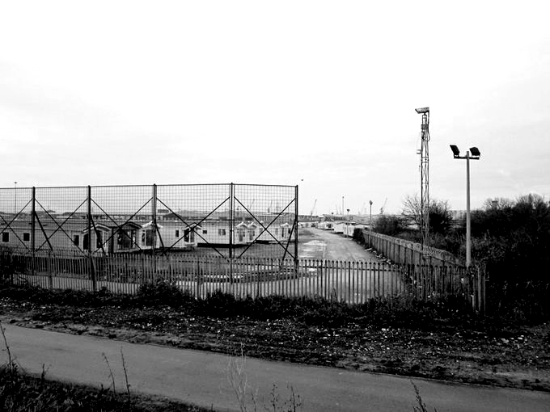

SCP-028

- Item nº:
- SCP-028
- Classe do objeto:
- Safe
Procedimentos Especiais de Contenção:
Nenhum meio especial é necessário para a contenção neste momento, pois o SCP-028 não mostrou nenhuma mudança de tamanho, posição ou forma durante todo o período de sua contenção, mas o acesso deve ser restrito. Atualmente, o SCP-028 está contido no local (Site █), pois não é transportável por nenhum meio conhecido. O SCP-028 está selado em uma sala de concreto de seis (6) por seis (6) por três (3) metros (vinte (20) por vinte (20) por dez (10) pés), com uma única porta e dois (2) agentes armados posicionados do lado de fora. Somente pessoal autorizado pode ser exposto ao SCP-028, e é preciso ter extremo cuidado o tempo todo. Embora o SCP-028 em si seja inofensivo, o efeito pode ser muito danoso para quem não está preparado. (Ver documento EL-028-1125)
Descrição:
O SCP-028 está localizado em um pátio de armazenamento abandonado, do lado de fora de uma mina de cobre no norte de Michigan. O SCP-028 não tem nenhuma presença física detectável, mas seu efeito ocorre em um cubo de 2,1 metros (7 pés) ao redor do que se considera comumente o "centro" do SCP-028. Todas as formas de varredura e teste na área do SCP-028 não mostraram nenhuma leitura anormal. Adicionar ou remover objetos, ou tentar remover terra de baixo do SCP-028, não tem efeito para alterar o tamanho ou a forma da área de efeito do SCP-028, nem o início ou a qualidade do Efeito.
Os sujeitos que "entram" no SCP-028 são, em três (3) a seis (6) segundos, atingidos por conhecimento total e completo de um assunto. Esse conhecimento é, até agora, completamente aleatório em tamanho e utilidade, e às vezes passa despercebido por longos períodos. Um conhecimento mais "profundo" geralmente tem um efeito mais forte, com alguns casos [EXPURGADO: VER DOCUMENTO EL-028-1125]. Esse Efeito pode ser vivido várias vezes saindo e entrando de novo no SCP-028, mas pode causar enxaquecas e tonturas cada vez mais fortes depois de duas (2) exposições.
O SCP-028 chamou a atenção da Fundação após pesquisa em reportagens sobre um mineiro local que apresentou ao escritório de patentes dos EUA um projeto de reator de fusão a frio. O Sr. ███ relatou que "simplesmente me veio à cabeça, como um raio em céu azul!". As notícias e os sujeitos foram suprimidos e contidos após a descoberta do SCP-028, e os projetos do reator foram implementados na contenção do SCP-1995. Os testes subsequentes do SCP-028 produziram resultados mistos.
Documento nº EL-028-1114: Registro Parcial de Recuperação de Informações de 5/1/██
(Nota: todo o conhecimento é perfeito, total e eidético)
- Todas as entradas da lista telefônica da cidade de Nova York em 1998
- Como reprojetar o motor de combustão interna para funcionar com sangue humano, usando apenas peças já existentes. (Nota: o reprojeto completo leva quatro (4) horas e funciona com eficiência maior que a da gasolina.)
- Localização das chaves de um Buick LeSabre
- O método adequado de cuidado de uma colônia de ratos-toupeira
- Origem e história de doze objetos SCP. (Nota: o principal [EXPURGADO])
- História familiar da família Blackthorn, localizada em Londres, Inglaterra.
- Estrutura geológica da terra sob a Groenlândia, incluindo várias cavernas desconhecidas e [EXPURGADO]
Documento nº EL-028-1125: Registro
E-112: O sujeito D-1182 é exposto ao SCP-028. O sujeito começou a chorar e ficou em posição fetal, mostrando sinais de grande angústia. Ficou sem responder a perguntas e a estímulos externos por vários dias. Caiu em catatonia pouco depois de dizer que "isto não é vida". O sujeito entrou em coma e morreu pouco depois. A causa da morte foi atribuída a choque.
E-127: O Agente ███████ foi exposto acidentalmente ao SCP-028. O agente mostrou sinais de surpresa súbita e perplexidade. Quando questionado, pediu "um momento para organizar meus pensamentos, por favor". Depois de vários segundos, o agente riu, balançou a cabeça e tirou sua pistola de serviço do coldre. O agente então atirou e feriu o Dr. ████, e matou os Agentes ████████ e █████, antes de ser contido. O interrogatório pós-incidente revelou que o Agente ███████ tinha amplo conhecimento de atividades classificadas da Fundação e de vários objetos SCP a que não havia sido exposto anteriormente, incluindo o SCP-2669.
Todo o pessoal da Fundação que for encontrado dentro da área de efeito do SCP-028 deve ser detido por tempo indeterminado.
Documento nº EL-028-1128: Registro
Experimento-189: O sujeito D-9843 foi exposto ao SCP-028. ████/03/19 11:46
O exame do sujeito revelou ações respiratórias anormais. ████/03/19 13:37
O interrogatório revelou que o sujeito havia aprendido a reciclar o dióxido de carbono dentro de seu corpo. ████/03/19 17:21
Tentativas repetidas de ensinar a habilidade a outros funcionários Classe D fracassaram. ████/03/24 12:11
Sujeito eliminado. ████/07/18 15:03
A autópsia não revela nenhuma formação anormal de órgãos. ████/07/18 18:37
Notas do pesquisador: Dr. ████████ █████: Sério, como diabos ele fez isso?